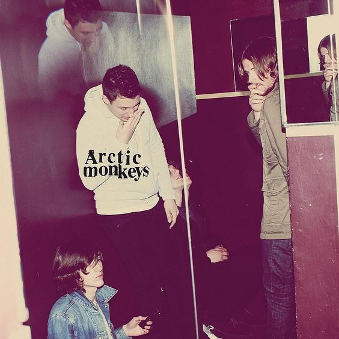

Home
HomeBRING ME THE HORIZON
BMTH foi uma banda que descobri no auge dos 14 para o 15 e desde então não parei de ouvir.
Sempre tive o costume de aproveitar do instrumental mais pesado para me acalmar, parece meio controverso mas na ansiedade me ajudou bastante.
Como todos os outros artistas, vou deixar do que mais gosto deles aqui:
álbuns favoritos
Post humans:survival horror
&
That's the spirit
lista das músicas que gosto
- 1x1
- Happy song
- Follow you
- Let's get the party started
- wonderful life
- Shadow Moses
- Blasphemy
- Teardrops
- Kingslayer
- MANTRA
Arctic Monkeys
A primeira vez que ouvi eles foi em 2018-2019 enquanto assistia um vídeo da
Hi Nalim e ela recomendou ¨why'd you only call me when you're high?¨
e eu gostei dela mais do que todas as outras músicas.
Como era um gênero musical diferente das demais músicas que eu ouvia,
passei a me viciar com mais facilidade na banda e
a busar por mais artistas de indie rock.
álbum favorito
Humbug & AM
lista das músicas que gosto
- Who the fuck are Arctic Monkeys?
- Fireside
- If you were there, beware
- Snap out of it
- Too much to ask
- Secret door
- I wanna be yours
- 505
- Pretty visitors
- My propeller
The Neighbourhood

Com certeza a banda que marcou a minha adolescência e
hoje em dia ouço com a sensação de que a melodia traça um caminho para
um lugar confortável e seguro,
de que um dia tive que superar toda dificuldade para poder habitá-la.
Todo instrumental melancólico me encanta e é como se eu pudesse sentir toda emoção que os artistas quiseram colocar na música.
Se pudesse escolher as obras que mais me conecto, eu diria essas:
álbum favorito
Wiped out & I love you


lista das músicas que mais gosto
- R.I.P. 2 My Youth
- The beach
- A little death
- Leaving Tonight
- Scary Love
- Flawless
- Greetings from Califournia
- Jealou$y
- Cry Baby
- Baby Came Home 2/ Valentines